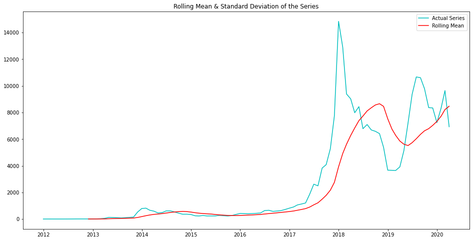
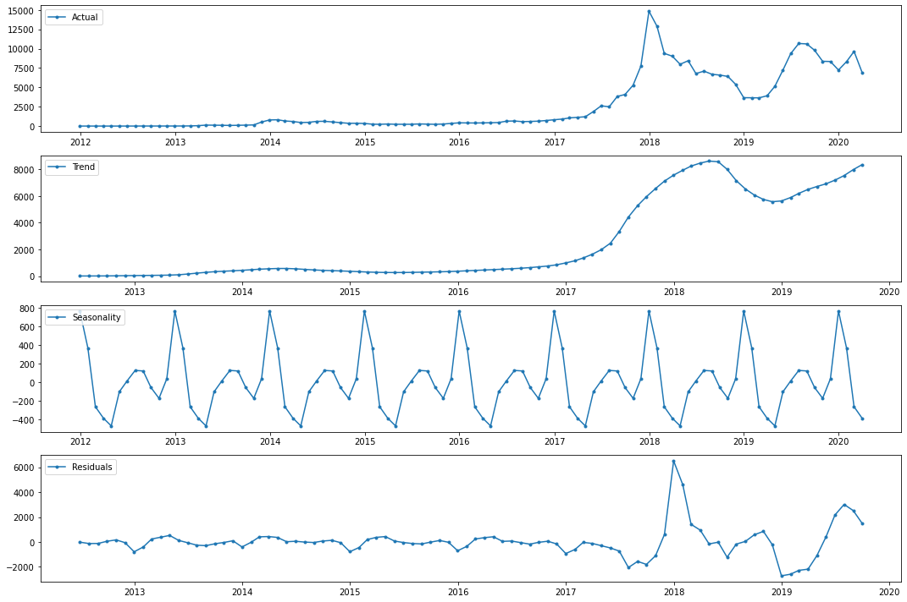
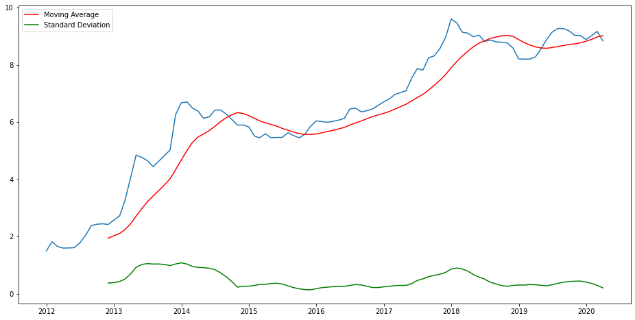
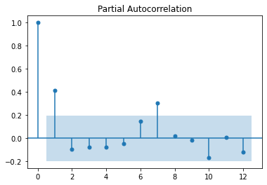
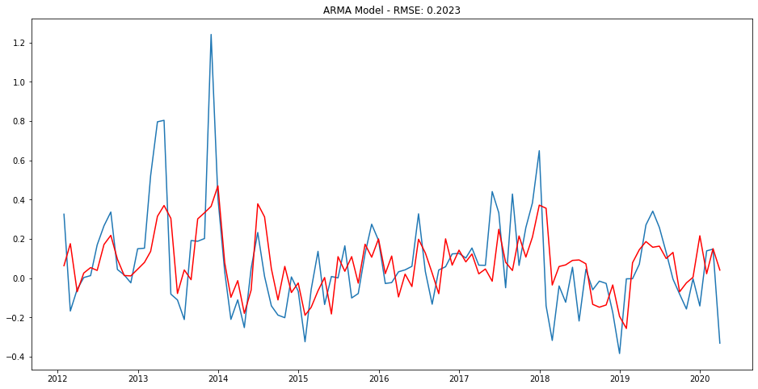
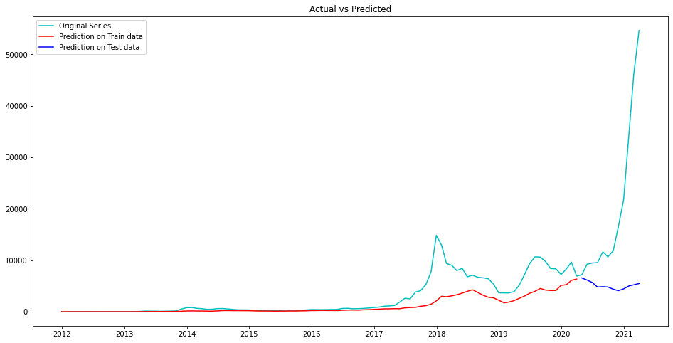
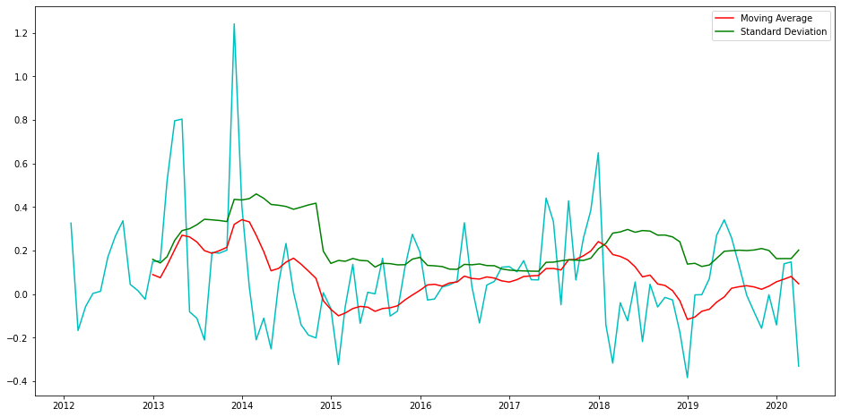
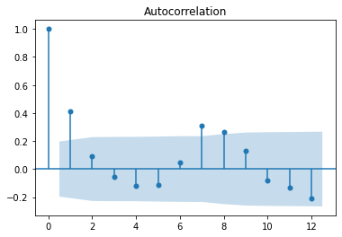
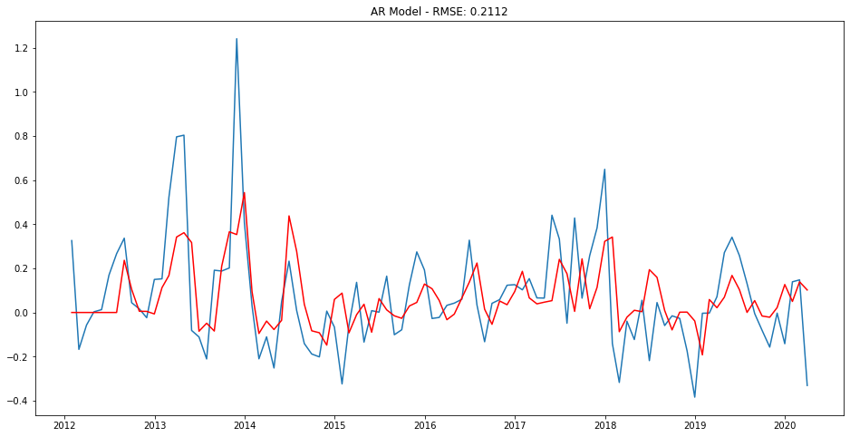
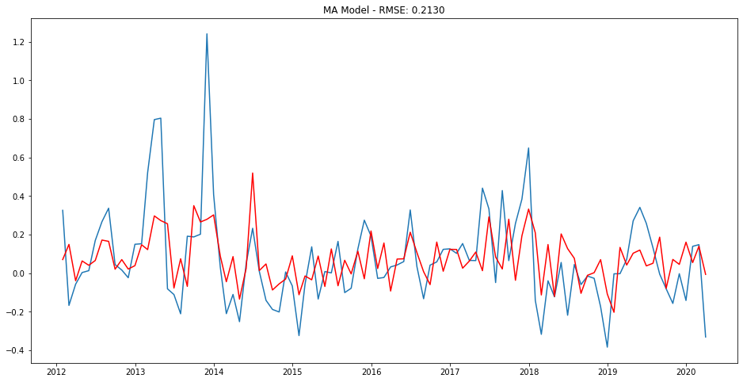

Overview
We tried to predict where Bitcoin's price would go next using only its own price history.
- Bitcoin is a volatile, decentralized cryptocurrency whose price has risen and fluctuated dramatically since 2017.
- Goal: forecast monthly Bitcoin closing prices using only the historical price series itself.
- Approach: classical univariate time-series modeling (AR, MA, ARMA, ARIMA).
- Hold out the last 12 months as a test set to honestly measure out-of-sample forecast accuracy.
- Challenge acknowledged up front: extreme volatility limits how far a price-only model can see.
Methodology
flowchart LR A[Raw Data] --> B[Clean & Encode] B --> C[EDA] C --> D[Train/Test Split] D --> E["Models"] E --> F["Tune (Cross-Validation)"] F --> G["Evaluate: R2 / RMSE"]
The Data
We worked with about nine years of monthly Bitcoin closing prices, with no gaps in the record.
- Dataset has 112 monthly observations across 2 columns: Timestamp and closing price.
- Timestamp was object-typed and converted to datetime, then set as the series index.
- Closing price stored as float; no missing values anywhere in the dataset.
- Split: final 12 months held out as test data, the rest used for training.
- Prices show a strong upward trend with rapid fluctuations, especially during 2021.

Exploratory Analysis
We checked whether the price pattern was stable over time, and it clearly was not.
- Rolling mean and standard deviation revealed a clear upward trend, signaling a non-stationary series.
- Augmented Dickey-Fuller test gave a p-value of about 0.36, far above 0.05.
- We failed to reject the null hypothesis, confirming the raw series is non-stationary.
- Decomposition exposed distinct trend, seasonality, and residual components.
- Seasonality showed prices spiking from December to January, then declining steadily through May.


Time-Series Patterns
We transformed the data until the price pattern became stable enough to model.
- Log transformation stabilized variance but left the upward trend intact, so still non-stationary.
- Differencing by lag 1 (one month) produced a constant mean and standard deviation.
- Post-differencing ADF p-value fell well below 0.05, confirming the series was now stationary.
- PACF plot's last significant lag was 7, suggesting an AR order of p = 7.
- ACF plot similarly indicated q = 7, setting the orders for the ARMA and ARIMA models.


Modeling & Results
We compared four forecasting models and the ARMA model gave the most accurate predictions.
- AR model (p=7) achieved an RMSE of 0.2112 on the log-differenced series.
- MA model scored a slightly higher RMSE than AR but a lower AIC, fitting the training data better.
- ARMA model (p=7, q=7) delivered the lowest RMSE of all four models.
- ARIMA model (p=7, d=1, q=7) gave the highest RMSE and much higher AIC, so it was dropped.
- ARMA chosen as the final model: best RMSE and second-lowest AIC overall.


Key Takeaways
The model fit history well but struggled to forecast the future, which is expected for such a volatile asset.
- Training-data predictions tracked actual prices closely, except for spikes in 2018 and late 2019.
- On the 12-month test set the forecast drifted far from actuals, with RMSE much higher than training.
- The gap reflects Bitcoin's extreme volatility and external drivers a price-only model cannot capture.
- Honest conclusion: classical models capture trend and seasonality but cannot reliably predict crypto prices.
- Built with: pandas, numpy, matplotlib, statsmodels 0.12.1
More Visualizations




Tech Stack
- pandas — data wrangling and tabular manipulation
- numpy — fast numerical arrays
- scikit-learn — modeling, pipelines, and evaluation
- seaborn — statistical visualization
- matplotlib — plotting
- statsmodels — OLS / statistical inference & VIF
Attribution
This project was completed as part of the MIT Applied Data Science Program (MIT IDSS / Great Learning). The program provided the case-study scaffolding; the analysis, code, and results are my own. Published with permission, for portfolio use only.